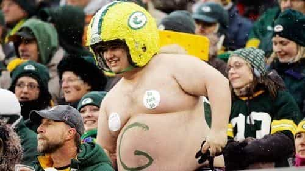

The beginning of a new year is a customary time to take a Socratic self-assessment of how your life has been going, and then decide what you want to change. These goals can be several different things. Many will want to get in better shape, overall a good idea. Perhaps it’s time to quit the porn habit. Maybe you want to stop smoking—that’s a good one too. If it’s crystal meth you’re smoking (let’s hope not), better cut it out while you still have teeth. Maybe your strange way of fertilizing potted plants is giving you too much bad publicity. Ultimately, whatever you decide to change is up to you.
Self-improvement is a good thing, and we harp on that a lot around here. However, people don’t always follow through with their resolutions. The gyms are jam-packed with new customers in January, but things are generally back to normal after February. This suggests that resolutions all too often have a two month shelf life. When promises to yourself fall by the wayside, it leads to disappointment, and sometimes even feelings of hopelessness.
Well, let’s work on doing better than that, how about it? Here are some tips that will help take you across the finish line.
Set goals properly

Someone’s got some work to do.
First of all, make sure that your goals are realistic. If you set out to go from noodle arms to 18-inch biceps before spring break, become fluent in Japanese in six weeks, invest $1000 and quickly turn it into a million (that only works for Hillary), or bed a new supermodel every month, that’s setting yourself up for failure. Pacing yourself out so that your progress is measurable and attainable is important. Another potential pitfall is trying to do too much at once. You can make a timetable to pace things out.
So, do the research, figure out how long a goal should take, set a timeline, and get ‘er done. For example, “lose some weight” isn’t very specific. What’s the target? If someone has a serious problem—like a junk food addict who is 100 pounds overweight—then losing 10 pounds is a step in the right direction, but not a huge dent. A partial victory is better than nothing, but it’s the wrong place to rest on one’s laurels.
Staying motivated
It’s going to take some doing.
You will have temptations along the way. You will wonder if it’s really worth it. However, if you give up, then you’ll sink back into the inertia of old ways.
Most resolutions generally involve breaking bad habits, or acquiring good ones. This can be many things: eating right, practicing the guitar an hour a day, not snorting scouring powder, etc. It takes mental effort to overcome bad patterns of behavior and switching to good ones. However, over time it becomes easier. If you keep it up, then it becomes second nature.
Until then, you have to exercise self-control to keep working toward goals. How much do you want it? For example, do you want to keep eating crappy food, or get a great body? Even the nastiest habits can be overcome by the power of reason. Crackheads won’t light up in front of a cop, because they don’t want to go to jail for six months. Exercising self-control means policing yourself.
There’s an “extinction burst” effect that you may encounter. Here’s the short version. When you’ve done without something you’re trying to give up, the parts of the mind responsible for generating that thought will kick into high gear, generating a strong temptation. This will pass, and no, that junk food won’t taste as good as what you’re imagining.
Finally, “ego depletion” may make it more difficult to stay on track. This can happen after resisting several other temptations. (Remember, don’t take on too much at one time.) Also, things like anger, stress, and fatigue can make it harder. Think about all the times you decided to do something and blew it—was there something else leading up to that? Get proper rest and avoid unnecessary stressors when possible.
How the mind works

Plato’s Republic is a masterpiece covering many subjects. One of them is the divisions of the mind. These are:
- Desires (“epithumia”)
- Emotions (“thumos”)
- Reason (“nous”)
In Plato’s system, emotions are a counterbalance on the body’s desires—food, sex, etc. However, the power of reason is the ultimate decider. Freud repackaged this much later as the id, ego, and superego. The superego counterbalances the id, and the ego is the executive function.
Interestingly, Plato’s ideas correspond well with the modern triune brain model. The bodily desires come from the brain’s most primitive region, called the reptile brain. Emotions were the next to evolve, the mammal brain. The rest of the cerebrum is the neocortex. The power of reason is in the frontal lobe, very well developed in humans, responsible for both intelligence and impulse control.
Basically, your frontal lobe is in charge—or it should be! The emotions are wrapped underneath in a deeper layer, and the desires are the deepest. They can send strong signals, but they’re not the ultimate decider. Further, the power of reason can contextualize emotions, and even recruit them to override other signals, be they troublesome emotions or animal desires.

The Rationalization Hamster makes excuses for bad decisions after the fact.
However, when we fail to let the power of reason call the shots, a number of bad things can result. These include laziness, gluttony, misdirected anger, letting the “little head” do the thinking (four of the cardinal sins here), irrationality, cowardice, juvenile behavior, etc. Desires that need to be moderated can come from the basal ganglia. In practice, that can bleed into the limbic system too, where it gets tied in with emotions. That leads to bad habits and mental associations. It’s how nonsensical perversions and compulsive behavior like kleptomania originate.
The point of all this is that it’s possible to control yourself, and you should. Actually, Plato’s Republic argues powerfully for this. The short version is that leading a balanced life results in overall increased happiness. An unbalanced life gives you higher highs, but lower lows—and much more of them. If you want to get a culture fix, put it on your reading list. Everyone slips up occasionally, but this isn’t something we should consider acceptable.
Putting it all together
This little feller doesn’t belong in the driver’s seat.
When the lizard brain starts screeching like a four year old wanting a candy bar, Daddy should tell him to put a cork in it. A strong emotional push will help; the sarcastic big brother can provide running commentary. When all this is lined up, it works like this:
- Desires: “I want that candy bar!” Emotions: “You want to blow the diet, you fat bastard?” Reason: “Nope, earn a cheat day first.”
- Desires: “I want to watch porn.” Emotions: “That crap is disgusting!” Reason: “I’ll find a girlfriend instead.”
- Desires: “I’m tired. Let’s leave the gym.” Emotions: “Five sets to go, you pussy!” Reason: “I’ll tough it out; this is how I make progress.”
- Desires: “Just one more cigarette won’t hurt.” Emotions: “Just one? That’s what you said last time. So you want to die horribly?” Reason: “I’m done wasting money on cancer sticks.”
Feel free to be harsh with yourself as needed. In recent times, there’s been a lot of emphasis on self-esteem, not feeling bad about anything, and all that other warm and fuzzy Barney the Purple Dinosaur stuff. That puts the cart before the horse; self-esteem comes from accomplishing something. That’s what makes it real. If you’re tempted to blow it, remember what happened all the times when your rational mind let your emotions or desires do the thinking. Ultimately, the power of reason should be calling the shots.
I won’t conclude by telling you good luck, because it’s not about luck, but about willpower. Anyway, butch the hell up and make 2018 be the one where you accomplish your goals.
Read More: Stop Being A Pussy